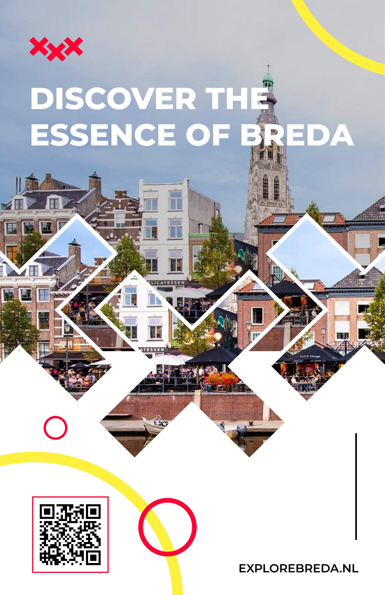
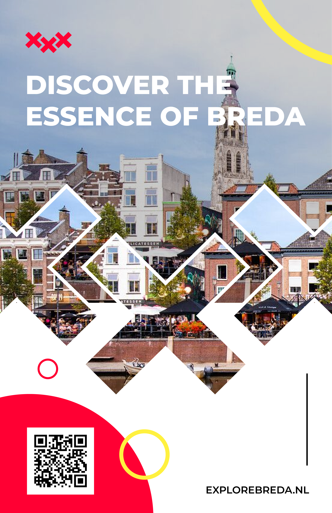
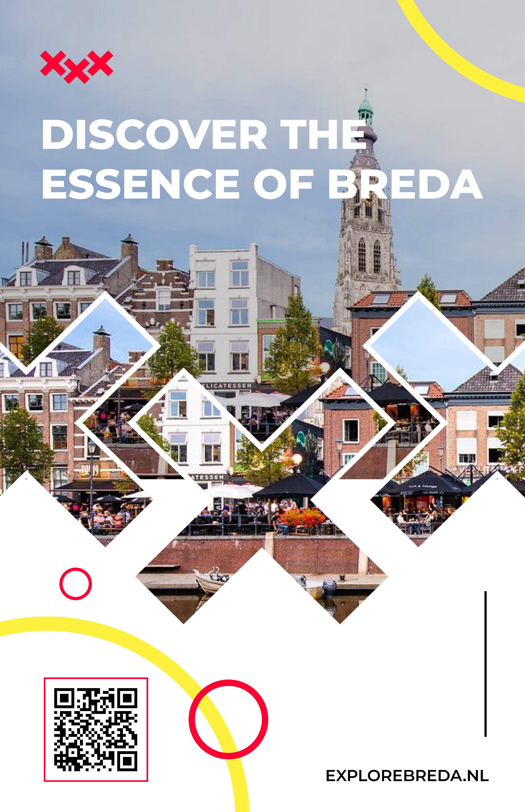
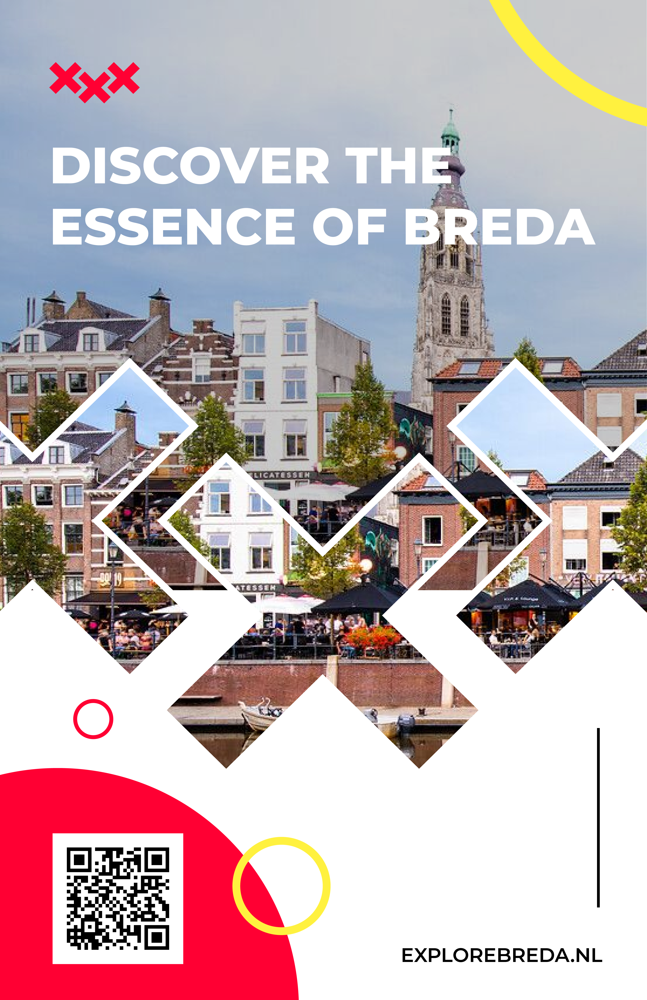
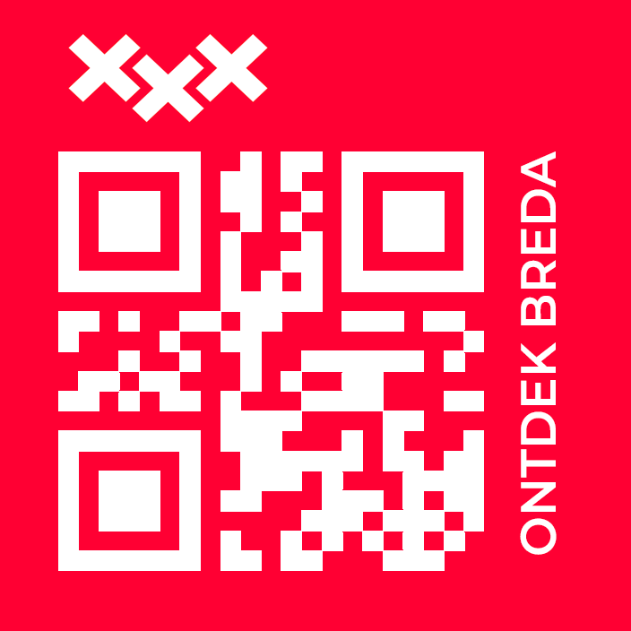
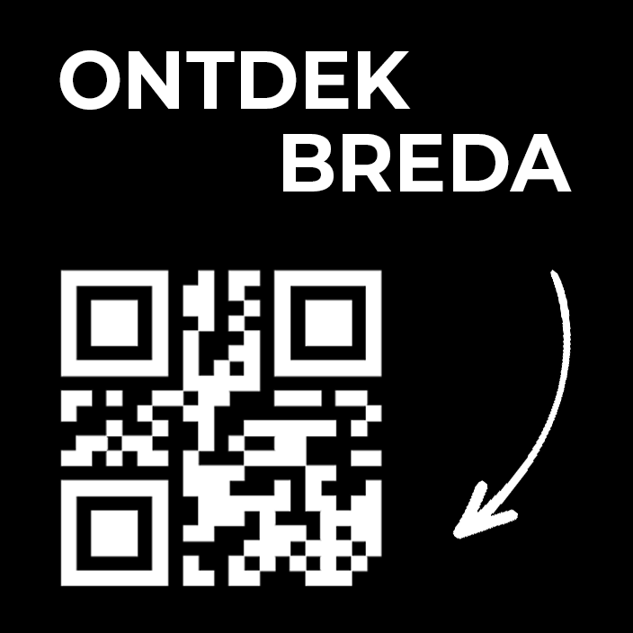
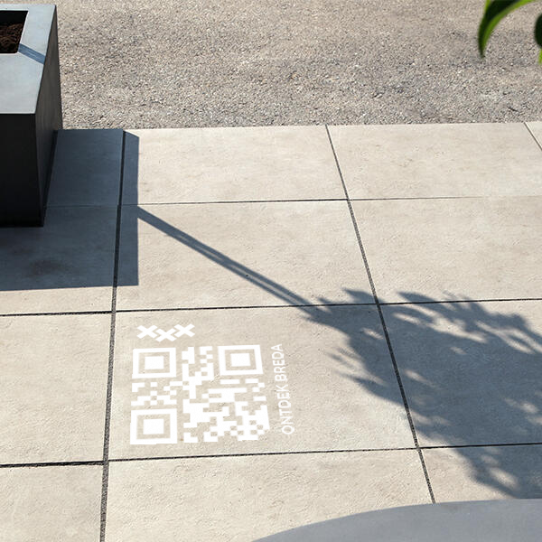
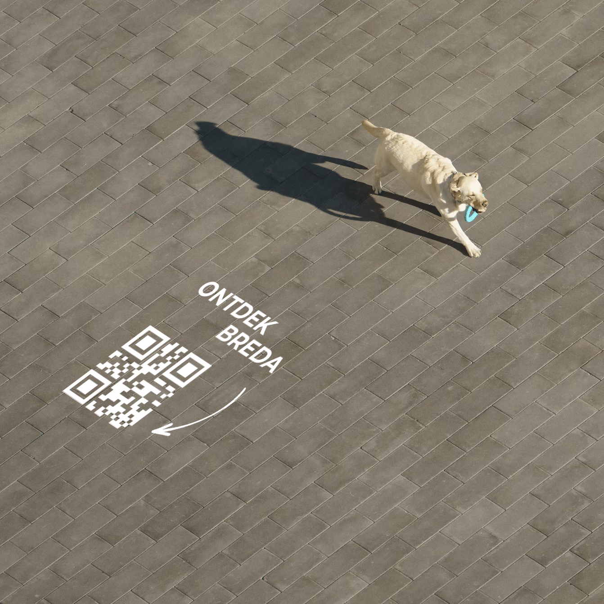
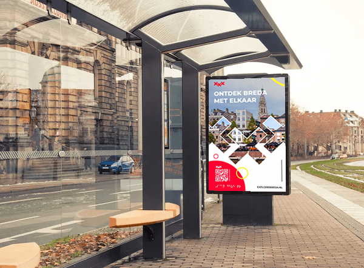
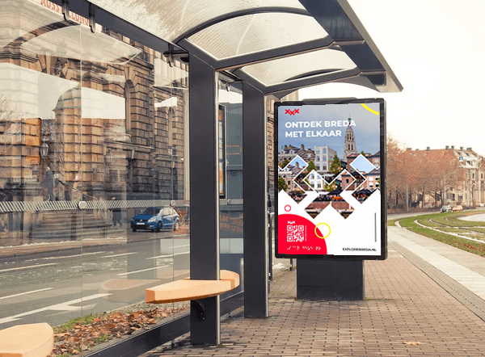

Introduction
During the market campaign project, I focused on creating an inclusive poster accessible to our diverse target audience spanning all ages and I did research on media marketing and did some testing.
LO1 – Interactive media products
Poster testing
Essentially, for our diverse target audience spanning all ages, it's crucial that the poster is accessible to everyone. This entails ensuring that everyone can use and see the QR code. After conducting tests with 10 random individuals, we reached a significant conclusion: our current QR implementation isn't effective. Therefore, we need to revise the QR placement or design in the poster to improve its usability.
LO3 – Iterative design
I started designing a poster for non-digital marketing. The client's initial feedback was that it didn't reflect Breda well. They wanted to see a stronger connection, although they did like the circular elements I used.
So, I worked on enhancing the connection between Breda and the individual by incorporating their logo in some way and linking it to the city. And we did a poster test for accessibility and we came to a conclusion that the qr is not working in this way.
Finally, I received feedback suggesting changes to the color scheme, the placement of the circles, and making the QR code more visible. I really liked the process of making it, because each step gave me some information I could use in the poster, for example the small competitor analysis we did in the beginning.

 



Mockups
These are the tile designs, based on feedback from the first itteration we came to the second itteration, because the arrow actually makes you trigger to do something.
 End result of the tile designs into mockups, first i had the first itteration with the first design, but I've gotten feedback that there should be more life in the mockup.
 And to visualize the posters I made mockups from them based on our trip and our research in Breda itself, what common things we've seen where a resident could find a poster at.
 

The process of making these designs/mockups went really good and I got more knowledge about Photoshop now, because of this.
LO4 – Professional standard
Competitor analysis
The "I Amsterdam" marketing strategy of Amsterdam is essentially a branding campaign aimed at promoting the city as a vibrant and welcoming destination. Its key factors include a memorable slogan, iconic logo, and extensive use of social media to engage visitors and locals alike.
Trip Breda
Our group traveled to Breda with the intention of observing the marketing strategies present in the city simply by exploring its streets. During our visit, I captured some photographs, and together we identified various marketing tactics, including billboards, QR codes, subtle text on floor tiles, and strategically placed flags.
L05 – Personal leadership
Throughout this project, I aimed to enhance my presentation skills, recognizing that they needed improvement. Additionally, I sought to implement a more organized approach to planning where I could contribute effectively. Taking the initiative, I coordinated the trip to Breda for filming the promotional video, and I also assisted in capturing photos and videos.
Reflecting on the feedback received during the project, I acknowledge that I could have sought more guidance from teachers. Nonetheless, the team maintained good communication, which was beneficial. These experiences allowed me to identify my strengths and contribute wherever possible to support the team effectively.